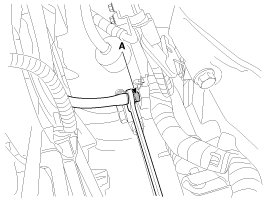
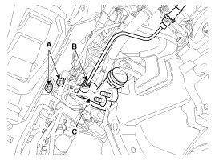
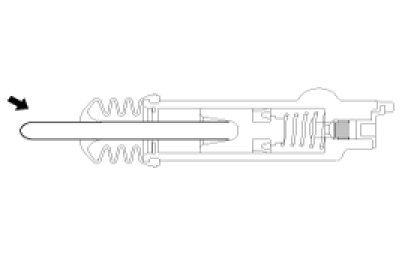

Repair Procedures
Removal
1. Drain the brake fluid through the bleed plug (A).

2. Remove the clutch release cylinder assembly (C) after removing the tube (B) and nuts (A-2ea).
Tightening torque:
14.7 - 21.6 N.m (1.5 - 2.2 kgf.m, 10.9 - 15.9 lb-ft)

Installation
1. Installation is the reverse of removal.
NOTE:
Coat the clutch clevis push rod specified grease.
Specified grease:CASMOLY L9508

Adjustment
Clutch Release Cylinder Air Bleeding Procedure
CAUTION:
Use the specified fluid. Avoid mixing different brands of fluid.
Specified fluid:SAE J1703 (DOT 3 or DOT 4)
1. After disconnecting a cap from the clutch release cylinder air bleeder, insert a vinyl hose in the plug.
2. Loosening the plug screw, press and release the clutch pedal about 10 times.
3. Tighten the plug (A) during the clutch pedal pressed. Afterwards, raise the pedal with a hand.
4. After pressing the clutch pedal 3 times more, loosen the plug (A) and retighten it with the pedal pressed. Raise it again, then.
5. Repeat the step 4 two or three times. (until there is no bubble in the fluid)
Tightening torque:
6.8 - 9.8 N.m (0.7 - 1.0 kgf.m, 5.0 - 7.2 lb-ft)
6. Refill the clutch master cylinder with the specified fluid.